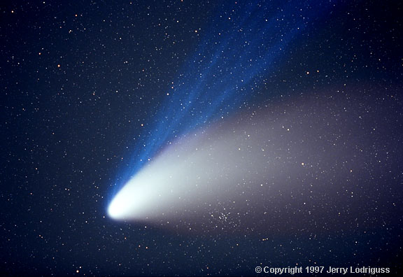

Credit: Jerry Lodriguss
Alternatively known as the ‘ion tail’ or ‘plasma tail’, the gas tail of a comet generally starts to form somewhere around the orbit of Mars. Here, the Sun begins to heat the nucleus of the comet releasing gas and dust into a temporary atmosphere called the coma.
Reaching lengths of hundreds of millions of kilometres, the gas tail is composed of molecules ionised by ultraviolet light from the Sun. The solar wind with its entrained magnetic field sweeps these charged ions (primarily CO+) from the coma and into a tail which always points directly away from the Sun. Due to the fast speed at which the solar wind interacts with the comet, this plasma is pushed out into a straight, narrow tail, which may show internal structure as a result of changes in the magnetic field. It is even possible that parts of the gas tail disconnect, the result of a change in the polarity of the magnetic field.
While the dust tails of comets shine by reflected sunlight and are therefore yellow in colour, the gas tails shine through fluorescence. In particular, the dominant CO+ molecule absorbs sunlight which it then re-emits at a wavelength of 4,200 angstroms as it de-excites. For this reason, ion tails tend to be blue in color.